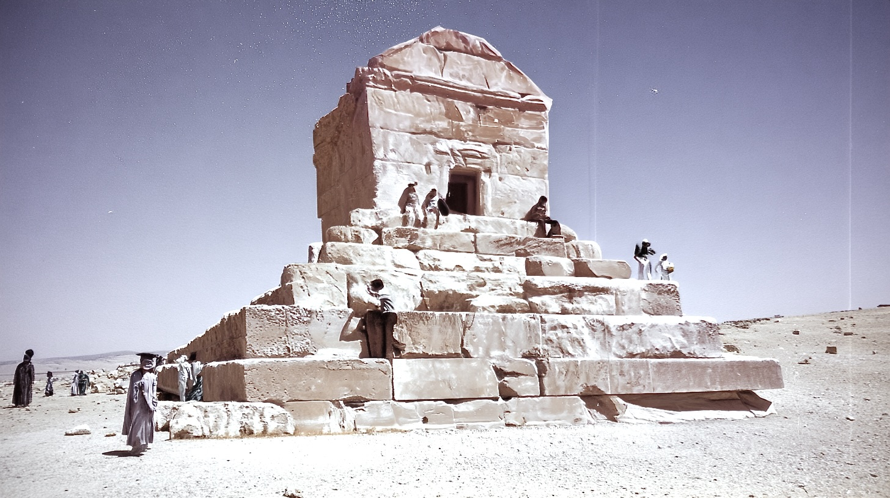
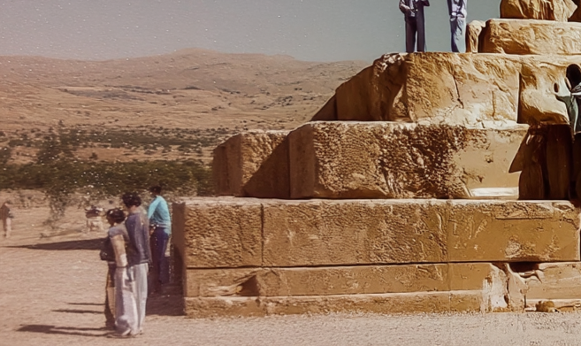
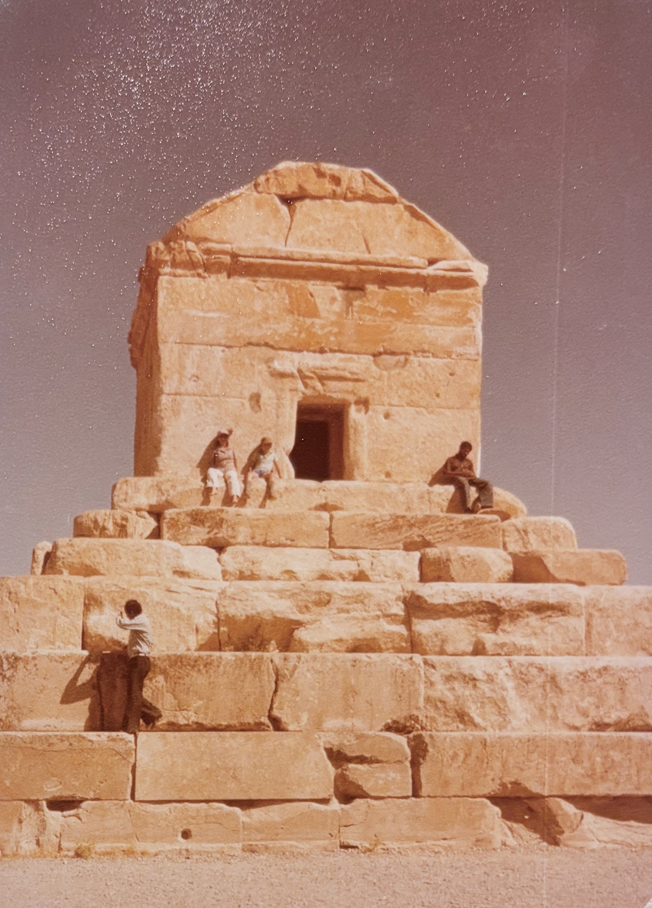
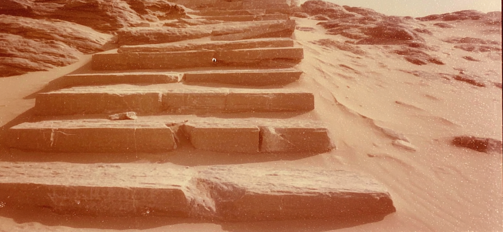
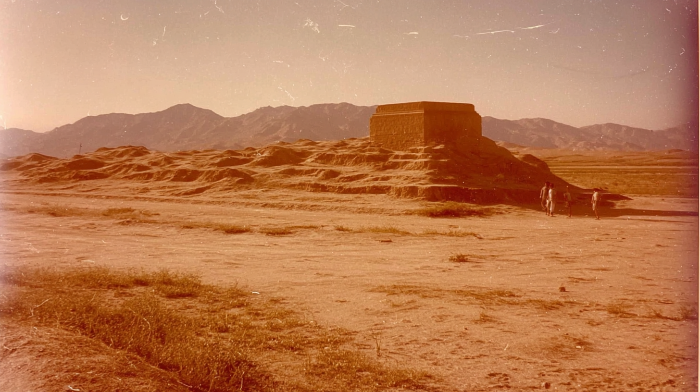

Visitors stand beside massive stone blocks at the base of an ancient stepped structure under a clear, sunlit sky.
The tiered desert tomb towers above scattered figures, its pale stone glowing brightly in the harsh midday light.
Weathered stone steps emerge from wind-swept sand, their edges softened by time and drifting desert dust.
close up of desert steps, subtle shutter motion,, faded analog photograph, sun-bleached colors, subtle dusty pink and muted tones, soft film grain, subtly overexposed detail, heat shimmer distortion, , edges dissolving into white, subtle light leaks, , imperfect composition, homestyle composition
tomb of Cyrus, with tourists, subtle shutter motion, dessert flat surrounded by distant hills barely visible through haze, faded analog photograph, sun-bleached colors, subtle dusty pink and muted tones, soft film grain, subtly overexposed sky some detail, heat shimmer distortion, empty space dominating frame, melancholic stillness, edges dissolving into white, subtle light leaks, , imperfect composition, homestyle composition, 35mm kodachrome, muted natural colors, low contrast grading, soft highlights, hazy atmosphere, arid heat. warm sky, soft warm reflections on wet sand. Light film grain, organic texture, low digital sharpness, no vivid colors. Shot like contemporary cinema, realistic, alive, subtle faded blurry shutter motion